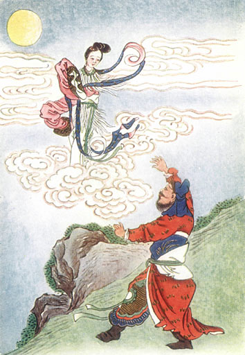
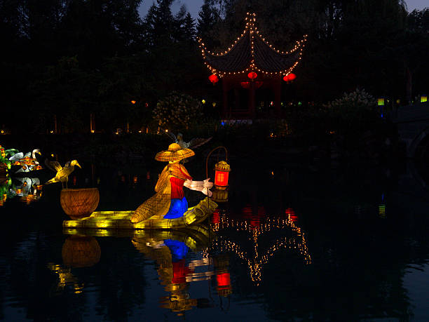
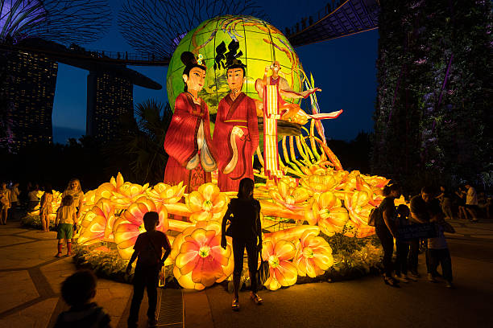

History
The Mid-Autumn Festival is one of the most cherished and culturally significant celebrations in Chinese tradition; its history dates back over 3,000 years.
The Chinese have celebrated the harvest during the autumn full moon since the Shang dynasty (c. 1600–1046 BCE). The term mid-autumn (中秋) first appeared in Rites of Zhou, a written collection of rituals of the Western Zhou dynasty (1046–771 BCE). As for the royal court, it was dedicated to the goddess Taiyinxingjun (太陰星君; Tàiyīn xīng jūn). This is still true for Taoism and Chinese folk religion.
The celebration as a festival only started to gain popularity during the early Tang dynasty (618–907 CE). One legend explains that Emperor Xuanzong of Tang started to hold formal celebrations in his palace after having explored the Moon-Palace.
By the Ming and Qing Dynasties, the Mid-Autumn Festival had become one of the main folk festivals in China. The Empress Dowager Cixi (late 19th century) enjoyed celebrating Mid-Autumn Festival so much that she would spend the period between the thirteenth and seventeenth day of the eighth month staging elaborate rituals.

Worldwide
Explore how different countries and regions celebrate the Mid-Autumn Festival! Having various rich and diverse practices from all around the world is what makes this global celebration so unique.

Botanical Garden, Montreal

Chinatown, Manhattan, New York

Gardens By The Bay, Singapore

Yuyuan Garden, Shanghai
Swipe to see how the world celebrates Mid-Autumn Festival differently.
Fun Facts
- Also called Moon Festival, Mooncake Festival
- On the 15th day of the 8th month of the Chinese lunar calendar, when the moon is at its fullest
- Celebrated across many cultures from all around the world
- Symbolizes wholeness and unity.
- Originated as a harvest festival 3,000 years ago
The Legend of Chang'e 嫦娥
The most famous legend associated with the Mid-Autumn Festival tells the story of Chang'e, the Moon Goddess. According to Chinese mythology, Chang'e consumed an elixir of immortality and floated up to the moon, where she has lived ever since.
Her husband Houyi, the great archer, was gifted the elixir after shooting down nine of ten suns that were scorching the Earth. Chang'e drank it to prevent a thief from stealing it, sacrificing her earthly life to protect the potion.
This legend will be brought to life through a shadow puppetry performance during our event. We warmly invite you to join us and experience the magic of storytelling!
Check out the video to uncover the full story.
Chang'e Flies to the Moon (嫦娥奔月; Cháng'é bēn yuè)